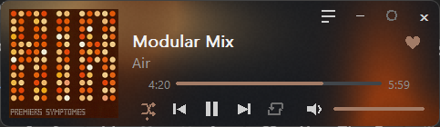
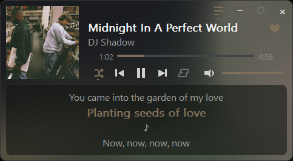

A tiny native Windows widget that shows what Spotify is playing and controls it. A flowing background takes its colors from the cover, and it uses almost no memory or CPU.


It does not play audio. Spotify keeps playing; the widget is a remote and a display.
Title, artist and album art, updated the moment the track changes. Click or drag the progress bar to seek.
Play/pause, previous, next, shuffle, repeat, mute and a volume slider for Spotify's level.
Lyrics that follow the song, in a translucent box, from LRCLIB. Plain lyrics scroll with the wheel.
Save or remove the playing track with one click. It works like the heart in Spotify.
A chain button puts the song's Spotify link on your clipboard.
A slow, irregular gradient colored from the album art. It only animates while a track plays.
Drag it anywhere, drag an edge to change the width, pin it on top, or hide it to the tray.
Turn on Start with Windows and it waits in the tray, then appears when Spotify opens.
Measured on the release build while Spotify was playing.
oldways.exe.Everything else works with no login. Only the heart needs your own free Spotify developer app, so nothing is shared with anyone.
http://127.0.0.1:8888/callback.spotify.txt; paste the Client ID on its own line and save.No analytics and no telemetry. The widget reads Spotify through the Windows media session, with no login and no network. It contacts LRCLIB only while the lyrics box is open, and the Spotify Web API only after you connect, and only for the heart.
You need Rust and the Microsoft C++ build tools.
git clone https://github.com/notkazhons/OldWays cd OldWays cargo build --release